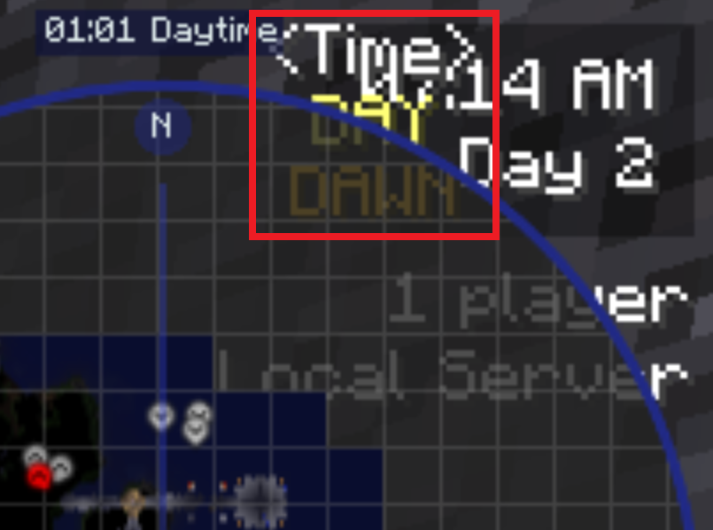

It seems that you've found my website. I assume you came through from my Youtube channel. If someone else linked my stuff elsewhere, tell them I said thanks for giving me attention. Some of my stiff don't really fit within the format of a video, which is why I post them in writing here. Some of my interests are games, video production, 2D and 3D graphics, game design, and hard science worldbulding. I honestly don't have the expertise in one single area to delve deep into it though. Don't expect regular or frequent updates here - I'm probably going to be too busy between my projects and schoolwork.
Craft It Yourself - Game Progression, Leveling, Tech Trees, and Ancient Warfare (2019-09-16)
I recently found out that Ancient Warfare has been revived to Minecraft version 1.12.2. This mod stands out because it uses NPCs (in combination with traditional machines) to “automate” certain aspects of the industry. The handling of NPCs as mindless slaves that you can craft from some food and gold are something that I personally do not like, though the idea has potential, with interesting worker management mechanics and an RTS-like military command gameplay. However, given that almost every villager mod does this, and that it is possible to make good gameplay with these mechanics, and that I’m probably looking for something different, I shouldn’t complain.
What I should actually complain about is that the mod transports energy by rotating rods to transfer torque to the other end, which causes a lot of energy to be put into rotating the rods themselves and leaves little for the actual machinery at the other end. This torque energy can directly power automation blocks (farms, fisheries, etc) which is f**king ridiculous. For example, have you ever tried creating a device that farm as well as a human can using only gears and whatnot? Exactly. This is why we haven’t achieved Fully Automated Luxury Gay Space Communism. Luckily, and props to the devs for this, the mod comes in parts so we can pick and choose what works and what fits into the modpack.
Overall, I think the mod is cool. It still isn’t going in the modpack though - it just doesn’t fit. Despite the magnificent walled villages and siege engines, I don’t like how the modpack handles progress. Various items are locked behind a tech tree, which makes sense for a strategy and management game where your empire has to learn technologies to make use of them. This makes sense if you are playing as an invented social construct, but falls apart when playing as a person. The player already knows how to do the various tasks, or can simply look it up. In various MMOs such as EVE Online, a skill tree or tech tree is used to control how fast players and society progresses as a whole, but I do not like this approach. It feels unnatural and inorganic. This can be justified if the progression is that of a magic system or something similar, but the point still stands.
EVE Online Corporation Management Skill Tree. Notice how people may be able to do these things in real life without the skill tree.(Source: EVE University)
A way to try to control progression would be to make systems very complex, requiring years of study, but this is bad gameplay for obvious reasons. Outside of a very niche community, people don’t want to play that kind of game. People want to have fun and relax, and I would be turned off if I needed a f**king university degree to actually do stuff. This “learning” can be abstracted back into a skill tree system, where the real life player pretends to do stuff while the in-game character actually performs the actions needed to accomplish the goal.
Another way to control progression is by making the creation of certain items needed to progress require another less-advanced item, which requires another even-less advanced item and so on. For example, Starcraft controlls unit progression by unlocking units behind structures, which are useful in and of themselves, rather than upgrades. Progress can be controlled even more by controlling how long industrial processes take.
Notice how the buildings that control various technologies also are useful on their own. (Source: Liquipedia)
I took a break from completeting this entry for a week, looking to add an actual conclusion and getting distracted with other things. During that time, I realized something very important: there is a big discrepancy for what works in singleplayer or a small server between your friends, and a large public server with hundreds or even thousands of active users. In the former, we don’t want the wait time. We want to keep the player constantly engaged, and to have them waiting around is bad gameplay. On the other hand, in the latter, you don’t want players to be getting god-level gear within 3 days by playing for 12 hours straight all day every day, leaving behind those of us who have lives outside of some obscure modpack in the dust. This brings us to the discussion of power creep but that's for another time.
I probably will develop a version for singlelayer and multiplayer, but singleplayer comes first. None of the XP storage mods satisfied my so I'll probably have to create my own.
Craft It Yourself - Adjusting Game Time (2019-08-30)
Progress continues on the modpack. I probably can make these updates into videos but I don’t want to put my laptop under this kind of stress that often, and it’s a pain having to wait 5 minutes for the modpack to boot up and fuss around gathering footage. Sticking the folder into a RAMdisk doesn’t feel fast enough either, though it takes closer to 1 minute to load. I imagine there is a way to unpack the jar files for faster loading. I do have a “lite” version of the modpack in the works and perhaps I should get that done first for the sake of reduced loading times.
Currently, I am working on fixing things that don’t act as they should. For example. Repose is causing dirt-roofed caves to collapse. Most notable of these changes however are whitelisting various mods that add in equipment so they work properly without interference from Tinker’s Survival. I also found out that Tinker’s Survival wasn’t broken after all. I had to physically strike flint against stone blocks to get flint shards. There also was some cleanup of the HUD and the addition of a content pack for Immersive Vehicles. The change that I would say is the most significant, and the main topic of this write-up, however is the change in day length. Nighttime is quite brutal in this modpack thanks to the Epic Seige Mod, even with advanced weaponary, which is why I thought it was a good idea to give the player time to prepare. I decided it to set it to 6 times the normal amount, or 2 real hours. However, Millenaire probably will be affected by the change in daytime tickspeed and I will have to see how this turns out. In the meantime, with a host of mods affecting the day/night cycle, the process of changing the day-night cycle was quite involved.
At first, I used Longer Days. I was not happy with this mod, as it calculated how many ticks to tick back to slow down the flow of time as needed. This can be observed with a mod that shows the numerical ingame time, such as Better HUD or Stellar Skies. The counter keeps flickering back and forth. Serene Seasons also appeared to be disabled by this mod.
The second mod that I had used was Вращение Земли Майнкрафтская (Time-speed Mod), which translated into english means Cheeki Breeki iv Damke /s. This mod was somewhat better. It didn’t conflict with Serene Seasons but it was redundant as Serene Seasons already had a setting in its config that allows changing the length of the day.
I needed to change the settings for Stellar Skies. I honestly don’t want to spend the time to find out what happens if only change the settings for one mod.
Day length should be equal to the day length in the Serene Seasons config. Year length also should be equal to “Sub Season Duration * 12 . I didn’t touch that (though I might) given that it currently takes 82 in-game days, or 164 real hours to go through one year. However, a lunar month in Minecraft is 7 in-game days, so from an immersion perspective, this makes sense.
(protip: when talking about fictional settings, use “immersion” instead of realism to avoid the moans of “bUt iTs fIcTiOn”)
I couldn’t find anything related to the lunar cycle in the configs, but honestly, I can’t find the Moon in the sky either. Advanced Rocketry does replace celestial objects in the skybox, including the Moon.
Tick_Offset was needed for some reason. When I have it set to zero, the game starts me off at 65:40 in the 120 hour day (more on that later), but I also couldn’t be bothered to investigate further.
Strange behaviour regarding default starting time in a new world and the Tick_Offset value can be observed
I set Saturation_Words to 0 and Brightness_Words to 1 to make the text white, like the rest of the HUD. I set Shadows to true to make the text a bit easier to see in certain situations. I set Transparency (background transparency) to 0.0 to make the clock less obtrusive. Like the system clock on Windows, KDE, etc, I put the clock on the bottom right (Horizontal_Position=RIGHT, Vertical Position=DOWN). Make sure there aren’t any spaces after the values or the game will fail to launch.
The other UI elements in [Minecraft directory]/config/stellarsky/GuiSettings.cfg or [Minecraft directory]/config/stellarapi/GuiConfig.cfg I disabled or had to be manually brought up using a keybind. Disabling the crosshair using Better HUD apparently also will disable those UI elements as well. The only item I actually had to disable was the time element from StellarAPI as it was redundant.

We can see the clock provided by StellarAPI through this mess of pre-update UI, which I have turned off.
I previously mentioned the 120-hour ingame day. I decided it would be nice to have the seconds in real life and minutes in-game be synced up. Since 1 day is 120 real minutes, I modified the Daylength_in_Hour to 120 to adjust the in-game time accordingly. That should be it for this update and a new update should be rolled up accordingly!
Creating a Minecraft Modpack (2019-08-25)
I am working on a collection of mods that focus on customizable items and multiblock machines. Most modpacks I've seen have their technology centered around mods like IndustrialCraft 2, Thermal Expansion, and Mekanism. While these are fine mods, they are focused on magical 1 meter^3 boxes, which I was not satisfied with. Immersive Engineering works differently, with mutliblock machines that actually needs to be built.
Instead of glowing red tubes, it offers actual, hanging powerlines. Instead of one block that magically spits out dusts when ore is put in, it offers a crusher, a big multiblock (5x3x3) that features rotating wheels and spits out particles as it breaks the ore. Instead of a Laser that turns power into magical light and ores, it offers an Excavator, another massive, resource intensive, multiblock (3x7x8) which digs ores out of the ground with a big rotating bucketwheel.
-Immersive Engineering CurseForge page
I also was not satisfied with the simplistic approach to GalacticCraft and how a magical metal box has everything needed to travel deep within the reaches of interplanetary space. Advanced Rocketry allowes the construction of custom-built surface-to-orbit vessels and starships - just like any other structure in Minecraft.
Regular villagers are boring, and I didn't want villagers that only exist to be the player's slaves, which was the reason I went with Millenare rather than Minecraft Comes Alive or Minecolonies. Millenare offers actual people within actual societies because I don't have friends to play Minecraft with. Tinker's Constructs's tool building system also fit within the philosphy behind this modpack of creating something unique yourself.
Realism mods such as Tough As Nails, Serene Seasons, and Tinker's Survival enhance the survival experience, and a slew of ambience and performance mods, as well as a number of other mods create an experiencec that I hope is immersive and challanging without being too grindy.
Creating a Minecraft Modpack 2: Electric Boogladoo (2019-08-27)
I updated the website theme! I also plan to update my intro animation and pfp Soon™, which is similar to my legacy Youtube profile which we don't talk about. But I digress. I had finished the two playthrough videos but haven't uploaded it yet because I wanted to make the modpack available *somewhere*, whether that be ATLauncher, Technic Launcher. I had ultimatley gone with Twitch/Curseforge because it massively simplifies license handling, even with All Rights Reserved mods. With the modpack being public, I declare:
"Craft It Yourself" is live as a project!
I also added some more mods -Little Tiles, Chisel and Bits, Chisel, ArchitectureCraft, Quark, Rougelike Dungeons, Immersive Vehicles, Tornados, Hunger Overhaul, Enhanced Overlays, Spice of Life, Epic Siege Mod, Subterranean Waters, and probably some others that I overlooked. There probably are several broken things. The ones I found so far in BetterHUD, where the vigentte overlay causes the screen to become black, and Flans Mod, which I didn't install properly. Shaders probably also don't work. The aformentioned issue probably is a symptom of a bigger problem; I noticed that HUD textures that should be transparent aren't, which can be seen at the Tough As Nails temperature indicator, and the water drop overlay, also in BetterHUD.


{kind=link}